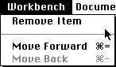

Click on one of the following topics to select it:
Figure 1: 3DO PostPro File menu.
Edit menu
When you select Edit from the PostPro menu bar, the Edit menu is displayed, as shown in Figure 2.

Figure 2: 3DO PostPro Edit menu.
This menu offers standard Macintosh menu functionality. For information on each of these options and what they do, see your Macintosh user guides.
Workbench menu
When you select Workbench from the PostPro menu bar, the Workbench menu is displayed, as shown in Figure 3.

Figure 3: Workbench menu.
Document menu
When you select the Document menu a Convert to option is displayed. By pulling right on the Convert to option, a submenu is displayed that allows you to select between converting the document to a 3DO image or 3DO cel. The 3DO Texture option is currently not supported. Figure 4 shows the Convert to submenu options in the Document menu.

Figure 4: Document menu.
If you select to convert to a 3DO cel, a Photoshop to Cel dialog is displayed. This dialog is discussed in Windows and dialogs.